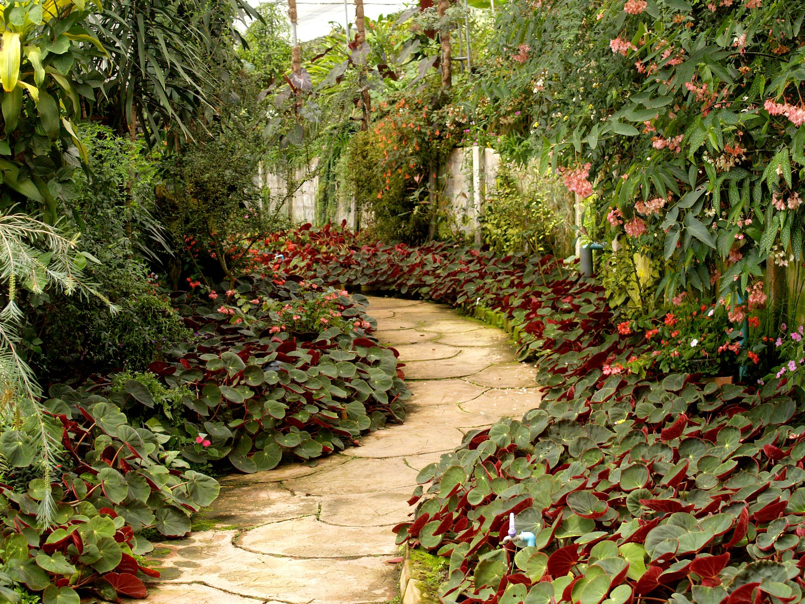
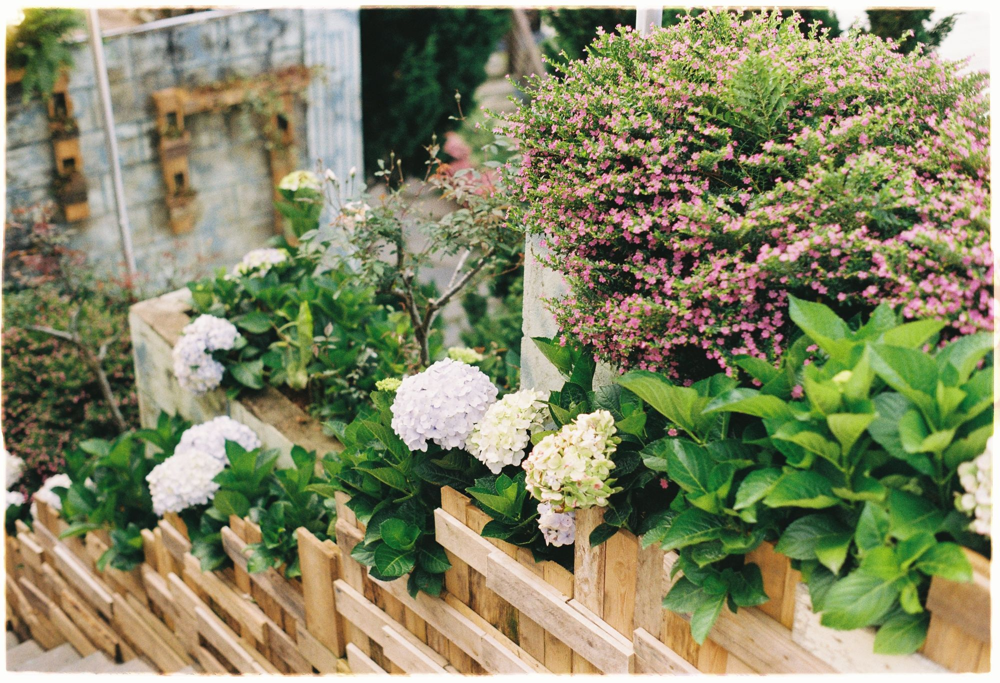
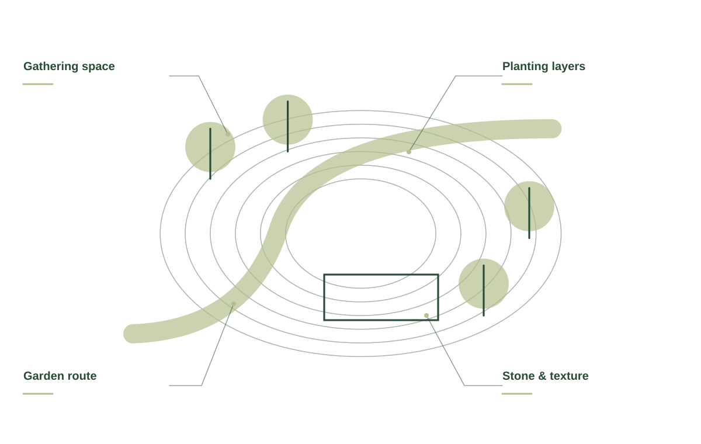
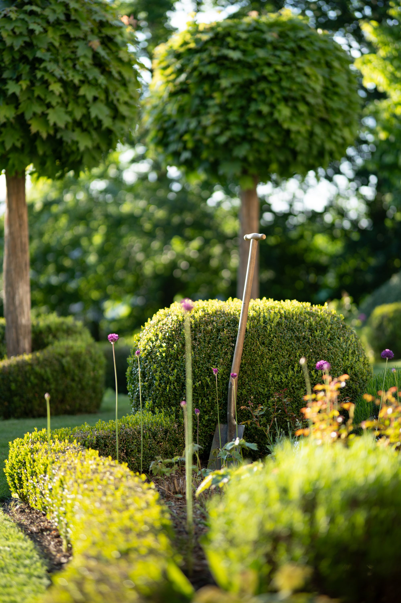
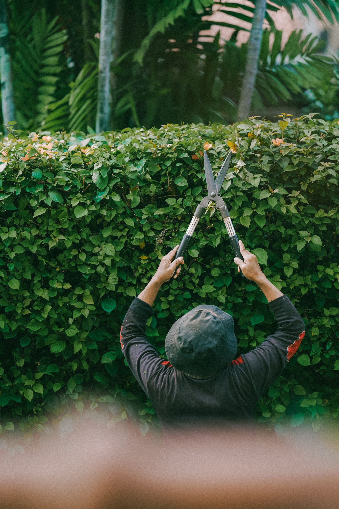
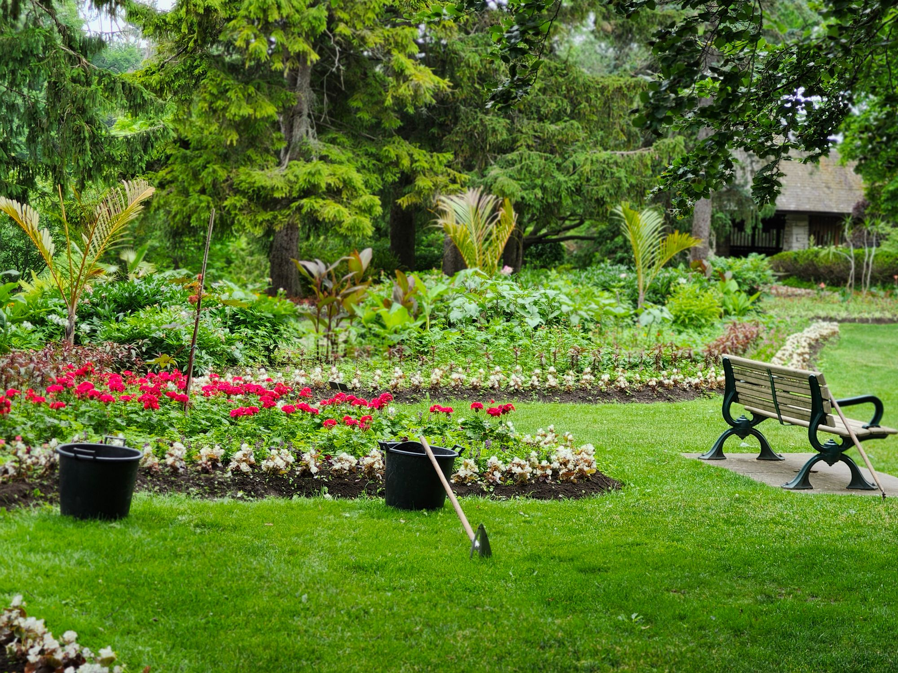
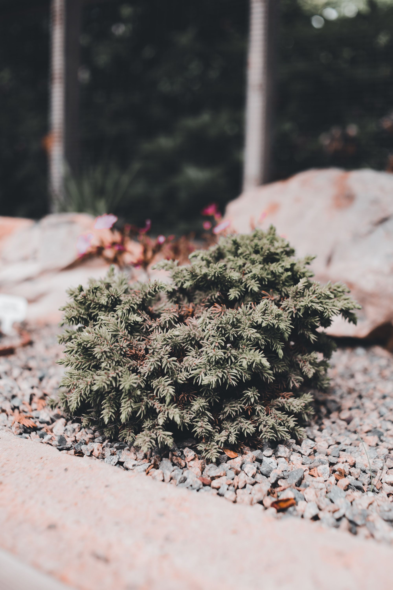
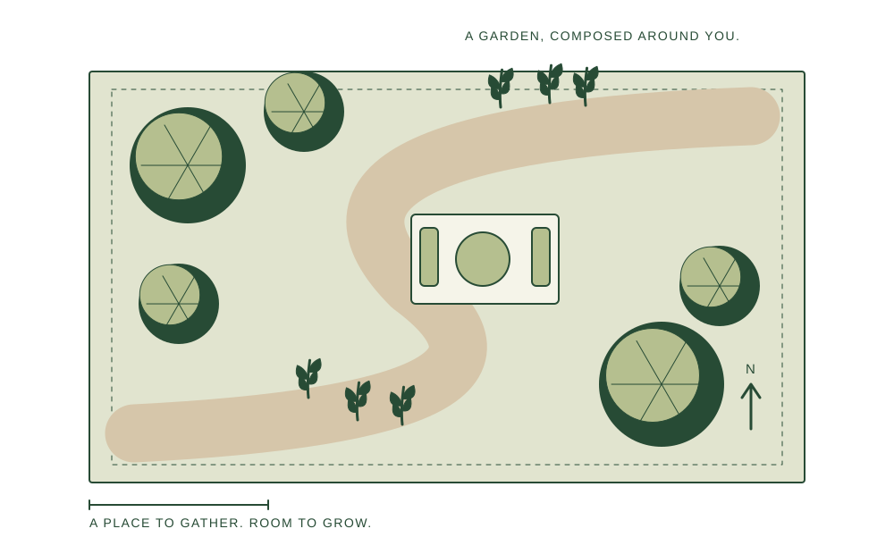
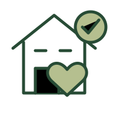

Landscape design
A cohesive direction for planting, materials, and outdoor living.
Landscapes shaped around your home, the seasons, and the way you want to live.
Make room for outside ↗

A cohesive direction for planting, materials, and outdoor living.
Well-placed paths and gathering spaces to ground the garden.
Shape, texture, and seasonal interest, thoughtfully placed.
A practical plan to keep your outdoor space growing well.
Planting, paths, gathering places, and ongoing care are connected. We begin with how you want to use the space, then look at what the site can support.

ROOT & STONE / THE DETAILS MATTERTalk about seating, shade, routes, and the moments you want more of in your garden.
Light, space, seasonal interest, and maintenance preferences help frame a considered planting plan.
Discuss priorities and whether design, installation, or care should happen as one project or in phases.
A landscape should work for the way you live. We begin with the site, the light, and the moments you want more of, then bring the details into one considered plan.




A place to sit.
A little room to grow.
A reason to go outside.

Tell us about the space and the way you use it.
Light, soil, planting, and the practical details.

A scope made around your garden and your goals.
When you get in touch, a little context goes a long way. These are the details that help us start a useful conversation about your landscaping project.
Tell us what you have in mind ↗Tell us about how you use outside so the conversation starts with your situation.
A few details about the site and light help us understand what you need.
Share planting preferences when you get in touch, including photos where useful.
Let us know about maintenance and phases so the proposed scope reflects your priorities.
Yes. We can discuss a focused update or a wider plan, depending on what you want to change.
Site conditions, light, mature size, maintenance preferences, and your design goals all guide the planting plan.
We can discuss priorities and a sequence that works for your property and budget.